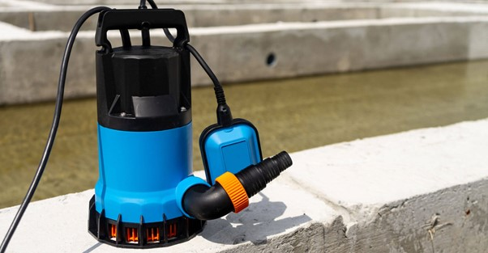
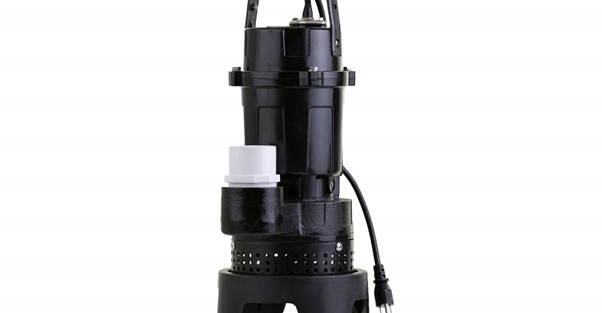
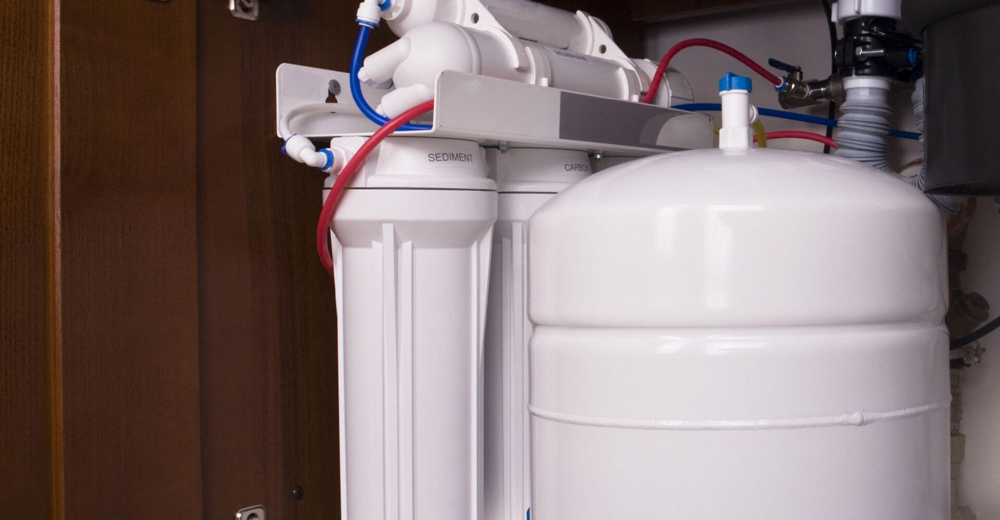
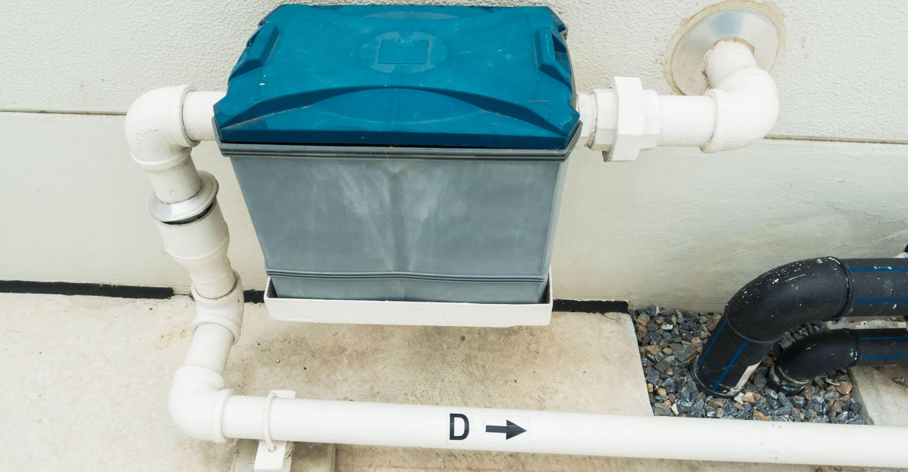
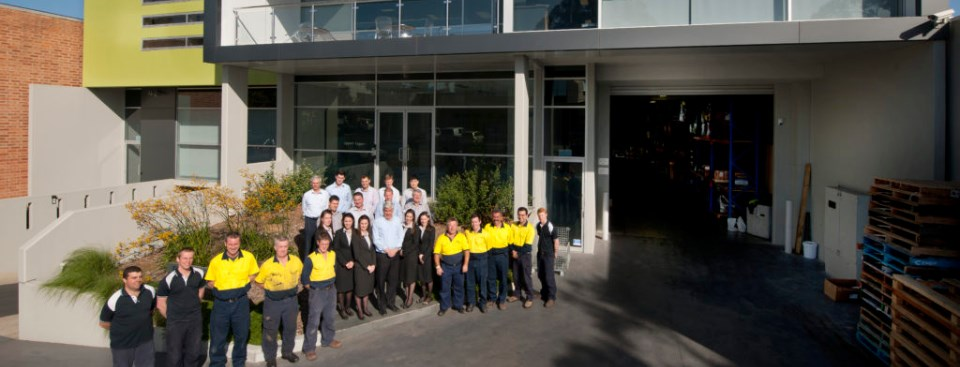

A Pump for every Application
A Pressure Pump for Every Application in Australia Aline offers a large range of solutions for various different pump applications. We work with…
Read article16 articles
A Pressure Pump for Every Application in Australia Aline offers a large range of solutions for various different pump applications. We work with…
Read article
How Often Should a Fire Pump Be Tested? When it comes to buying fire pump systems, water storage tanks and valves online, Aline Pumps is…
Read article
What Are ESFR Sprinklers for Australian Warehouses? Aline Pumps is a top choice for contractors looking for fire pump systems and valves online.…
Read article
A high pressure water pump is designed to generate strong, focused water force—ideal for tasks like cleaning, firefighting, irrigation, and…
Read article
Aline Pumps Blue Book Complete Product Guide Australia Aline Pumps proudly serves the Australian plumbing, building and fire industries with…
Read article
Australia’s Innovation of the Submersible Pump Over The Years As Australia’s preferred pump supplier, Aline Pumps celebrates innovation in…
Read article
Aline Pumps provides Australia’s best selection of all purpose pumps, with a sump pump range trusted by builders, plumbers and fire protection…
Read article
Under sink pump stations are devices used to move wastewater, where gravity does not assist in moving the water to the sewer. Commonly used in…
Read article
AS 2941:2013 is the Australian Standard that specifies the mandatory requirements for designing, constructing, installing, and maintaining fire…
Read articleOil separators, commonly used in industrial and commercial settings where oil is present in wastewater, work by allowing the oil and water…
Read article
A grease arrestor, also known as a grease trap, is used in commercial kitchens and food preparation areas to remove fats, oils and grease from…
Read article
We’ve long been committed to offering our clients quality-focused pumping solutions that are designed for both residential and commercial…
Read article